Cortex-M 内核的 OS 特性
@toc
一、通用堆栈知识
在前面讲解 STM32 启动文件的时候就已经提到过，有关堆栈大小的设置是在启动文件中设置的：
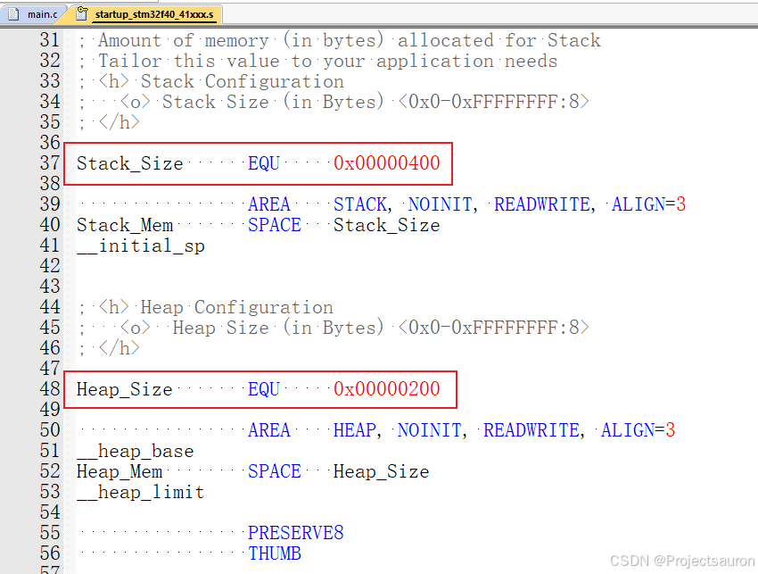
Heap 主要用于 Malloc、Free，动态内存申请和释放。
Stack 也非常重要，程序编译后所包含的大量 PUSH 和 POP 指令操作，系统根据 SP（堆栈指针） 寄存器访问当前对应栈内存，通过栈保存临时数据。大部分的栈都是向下生长的（也有向上生长的）。M 内核的栈是从高地址向低地址生长的，下面通过一个例子演示一下：
1 | |
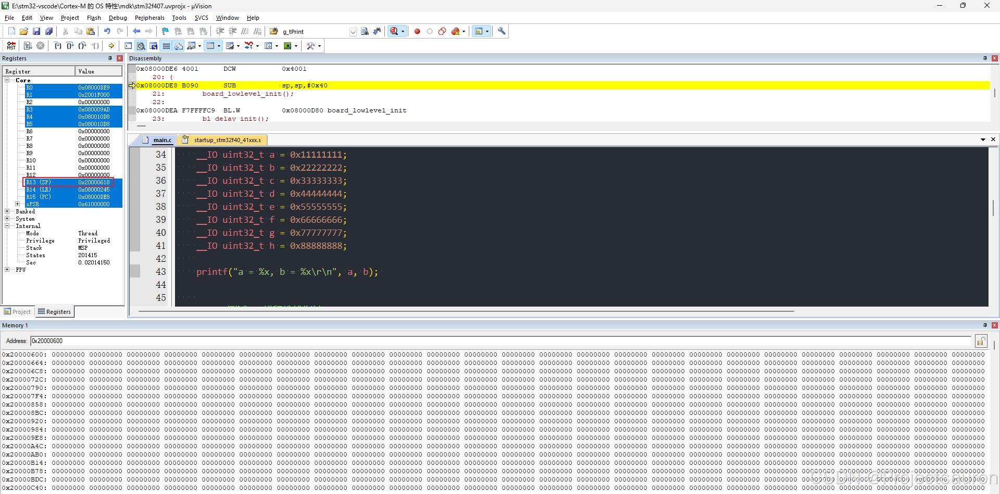
然后进入调试状态，可以看到现在 SP 指针是 0x20000618。
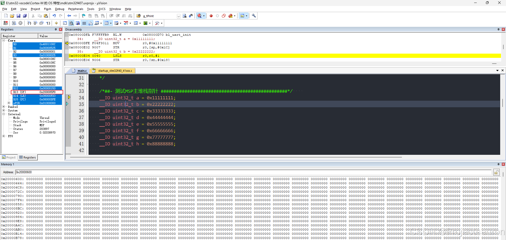
可当我们实际点击单步调试的时候，SP 指针现在又变成了 0x200005F8，0x20000618 - 0x200005F8 等于十进制的 32。也就是说少了 32 个字节。这里是因为程序一来就把这 8 个数据，共 32 个字节的内存分配好了。
当你把 __IO 去掉后，就不会出现以上的情况。__IO 其实就是 volatile，所以在这里就是告诉编译器它后面所定义的变量随时都有可能改变，因此编译后的程序每次需要存储或读取这个变量的时候，告诉编译器对该变量不做优化，都会直接从变量内存地址中读取数据，从而可以提供对特殊地址的稳定访问。
下面继续执行，可以看到，数据是从高地址向低地址存储的。
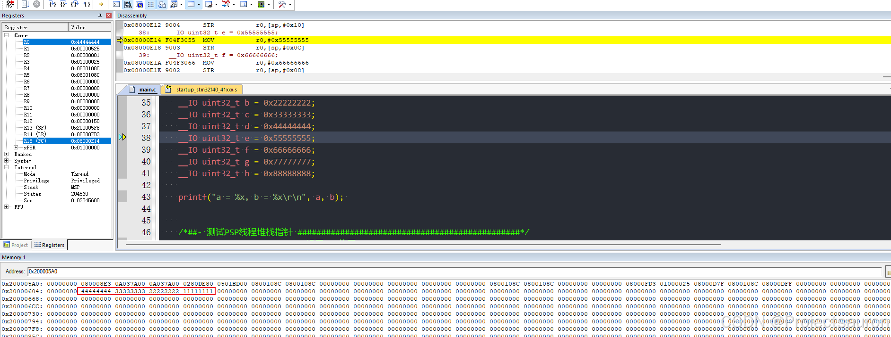
当然，内存空间只是连续字节数据的抽象，本身并不区分堆和栈的概念，它做的只是存储和读写信息。因此，如何定义堆栈、初始化建立堆栈环境，在嵌入式软件运行前便显得尤为重要。这涉及到处理器提供的堆栈机制、操作系统内存管理和进程切换等方方面面。
二、双堆栈用法
下图取自权威指南：
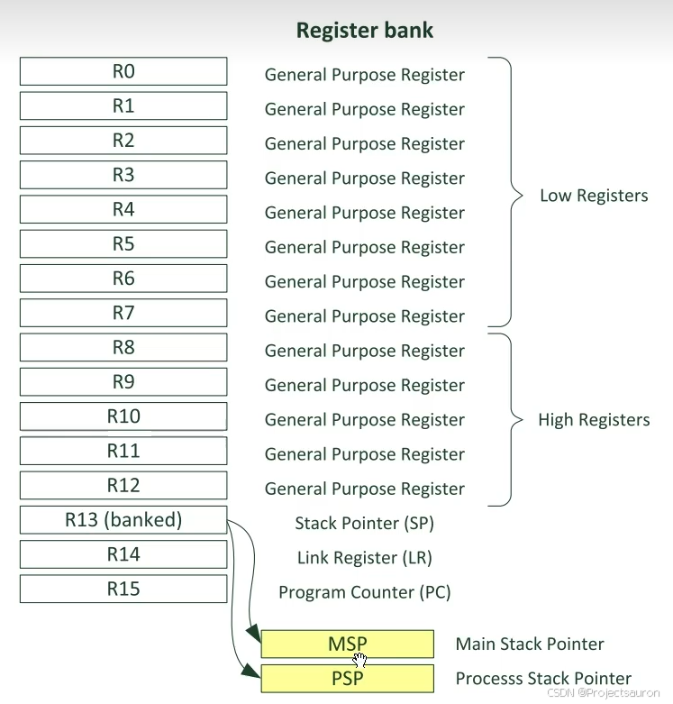
在搭载实时操作系统内核的嵌入式软件中，栈往往分为两大类，除了满足系统基本的主栈（main stack）外，往往还需要进程/线程栈（process stack）。这两部分内存空间是独立存在的：
- 主栈位于系统的栈区（stack）
- 而线程堆栈往往定义在堆区（heap）或静态区（static）
无论是静态还是动态创建，线程栈都不会占用栈区的主栈空间。即线程栈并不在栈区，可能在数据区或堆区，再次说明主栈和线程栈内存空间独立。
理解这一点，是理解 MCU 堆栈的关键前提。
所谓双堆栈，本质上都是 R13，不过在不同的运行状态下使用的栈是不同的，并且在同一时刻，只有其中的一个栈可用。在系统复位后、进入线程环境前，默认使用主堆栈，中断服务程序（ISR）中也是使用主堆栈。RTOS 各线程中的应用代码，则使用线程堆栈。
- 如果使用了双堆栈，那么在中断里只能使用
MSP；而在中断以外，可以使用MSP，也可以使用PSP。（不过在 RTOS 里，中断以外全部使用PSP，后面讲原因）。
上电后，系统仅初始化了 MSP，需要通过额外的汇编代码建立完整的双堆栈系统，当实时内核准备就绪，线程调度正常运行，双堆栈机制开始工作。进中断时系统根据当前状态自动切换堆栈，进程上下文切换时会更新不同线程的 PSP，通过修改 EXC_RETURN 可以手动切换 MSP/PSP。
双堆栈机制使得内核/ISR 堆栈和线程应用堆栈分开管理，通过不同的堆栈指针寄存器完成切换，大大提高了系统的效率，在绝大部分的嵌入式实时操作系统中，都使用了双堆栈机制，如 ucos、FreeRTOS、RT-Thread 等。
在一些简单的应用中，例如裸机程序，可以从头到尾都只使用主堆栈，只要确保分配足够的空间即可。
还是一样，通过例程来看，在刚才的程序下面添加：
1 | |
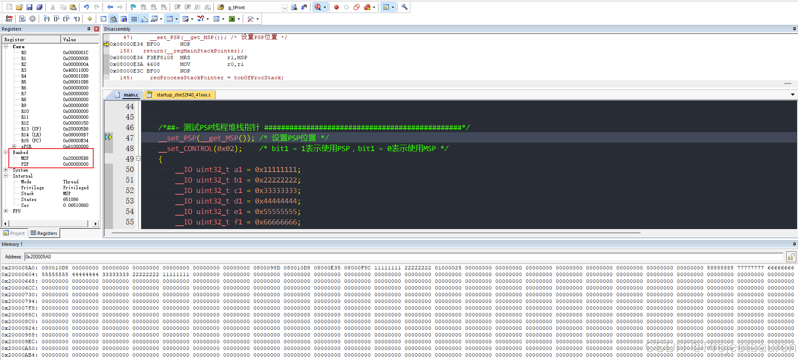
下面继续执行：
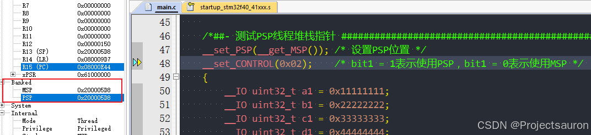
这里将 PSP 指向 MSP 一样的地址，然后设置使用 PSP：
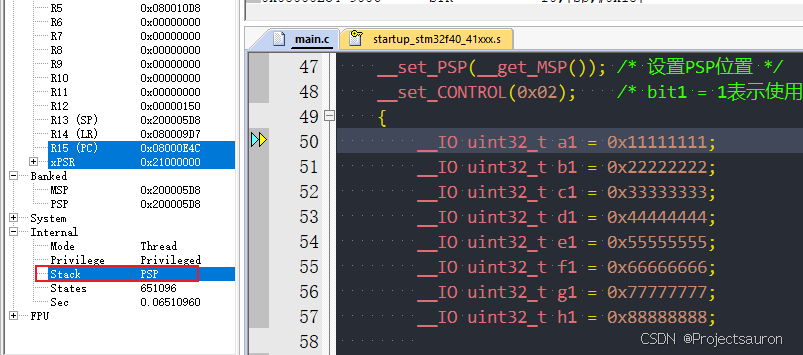
然后继续执行：
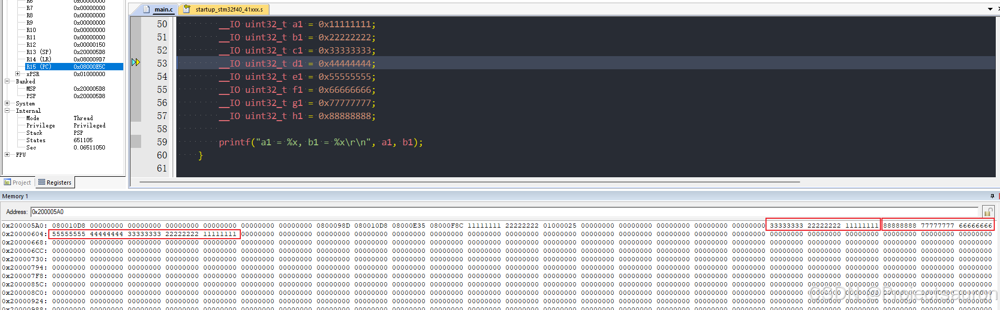
可以看到，现在只是改成使用 PSP 了，其它和 MSP 没有什么区别。
下面我在我的 SysTick_Handler 函数中打一个断点，然后全速执行：
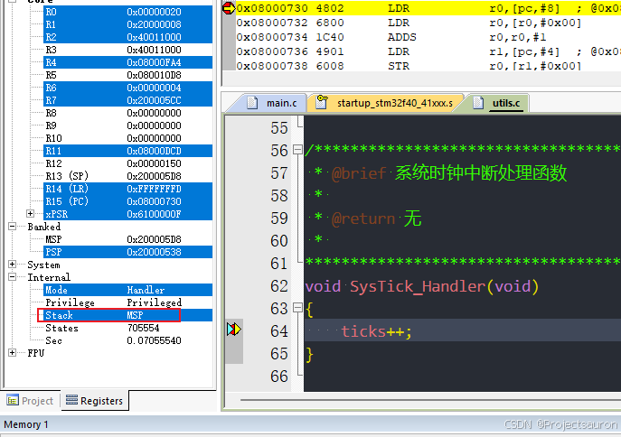
栈指针又切换回 MSP 了。而退出中断后，又会自动切换回 PSP：
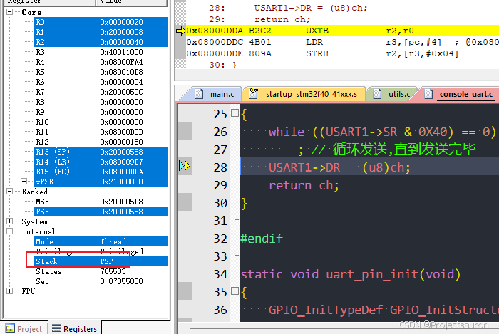
这也印证了刚才所说的，在任务中使用 PSP，在中断中使用 MSP。使用双堆栈，把任务和中断使用的栈区分开，这样安全性会更好一些。
三、PendSV 中断介绍和用法
PendSV 典型使用场合是在上下文切换时（在不同任务之间切换）。上下文切换的本质就是保存当前执行现场 A，切换到另一个任务 B 里面。切换回来时又要恢复执行现场 A（将一系列的寄存器入栈、出栈）。
由于 PendSV 的特点就是支持==缓期执行==，所以 RTOS 可以利用它这个特点，进行任务调度过程的上下文切换。而为什么要使用==缓期执行==的特点来进行上下文切换呢？简单的说就是任何 RTOS，都需要尽量不打断外设中断。 我们来举例说明，假如一个系统中有两个就绪的任务，上下文切换被切换的场合可以是：
- 执行一个系统调用
- 系统滴答定时器 SYSTICK 中断，触发了任务的调度。
假如我们在 Systick 中断服务程序中，启动上下文切换，流程图如下：

但若在产生 SysTick 异常时正在响应一个中断，则 SysTick 异常会抢占其ISR。在这种情况下，OS 是不能执行上下文切换的，否则将使中断请求被延迟，而且在真实系统中延迟时间还往往不可预知——任何有一丁点实时要求的系统都决不能容忍这种事。因此，在 CM3 中也是，如果 OS 在某中断活跃时尝试切入线程模式，将触犯用法 fault 异常。
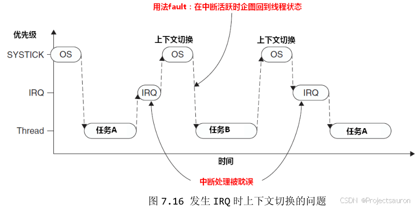
为解决此问题，早期的 OS 大多会检测当前是否有中断在活跃中，只有在无任何中断需要响应时，才执行上下文切换（切换期间无法响应中断）。然而，这种方法的弊端在于，它可以把任务切换动作拖延很久（因为如果抢占了 IRQ，则本次 SysTick 在执行后不得作上下文切换，只能等待下一次 SysTick 异常），尤其是当某中断源的频率和 SysTick 异常的频率比较接近时，会发生“共振”，使上下文切换迟迟不能进行。
如果将 SysTick 的优先级设置为最低，然后在 SysTick 中进行上下文切换，然后任务调度。这样不会触发 Fault。但是也有一个问题：
- 一般 OS 在调度任务时，会关闭中断，也就是进入临界区，而 OS 任务调度是要耗时的，这就会出现一种情况： 在任务调度期间，如果新的外部 IRQ 发生，CPU 将不能够快速响应处理。
而现在有了 PendSV，PendSV 异常会自动延迟上下文切换的请求（==缓期执行==），直到其它的 ISR 都完成了处理后才放行。为实现这个机制，需要把PendSV 为最低优先级的异常。
如果 OS 检测到某 IRQ 正在活动并且被 SysTick 抢占，它将悬起一个 PendSV 异常，以便缓期执行上下文切换。
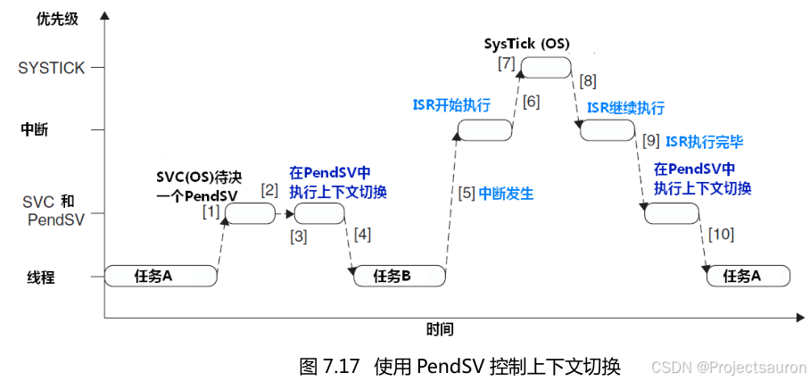
下面用一个数组模拟栈空间，来展示一下函数的切换：
1 | |
在 M 内核，R0、R1、R2、R3、R12、R14（LR）、R15（PC）、xPSR，这 8 个寄存器是自动入栈的。而其余的寄存器是手动入栈的。
开启了 PendSV 中断后，当来到 SVCTest（后面会介绍）时就会触发 PendSV 异常。
在 PendSV_Handler 函数中，我们使 PSP 指向 &PspStack[92]，也就是 PrintfLogo。所以当触发 PendSV 中断的时候，我们会将 PSP 指针指向 PrintfLogo 函数。也就是说，原本正常情况下，PC 指针保存的是当前 main 函数中下一条指令的地址，这里我们手动将其修改成了另一个函数的地址。这就是任务切换的本质。
来看现象：
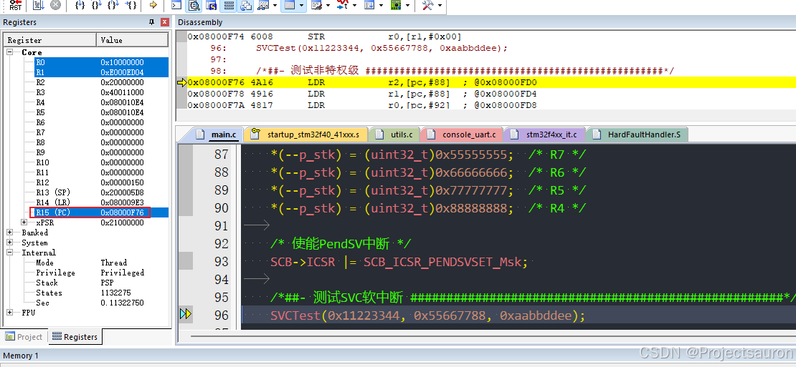
再执行一步的时候就会跳转到 PendSV_Handler。
当跳出 PendSV_Handler 函数后，正常情况下我们应该继续在 main 函数中向后执行，而这里会跳转到 PrintfLogo 函数中：
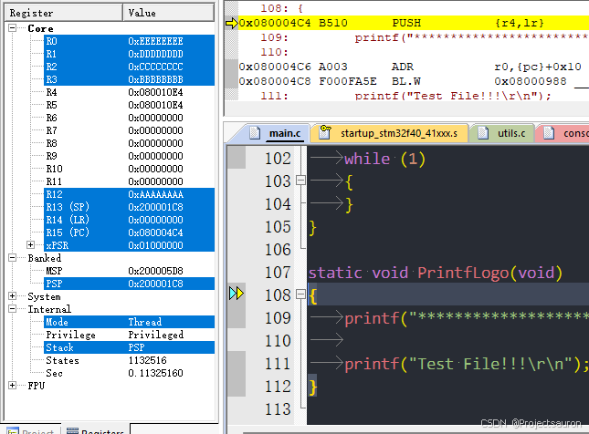
旁边的寄存器的值和我们硬件自动入栈的值也是对应的：
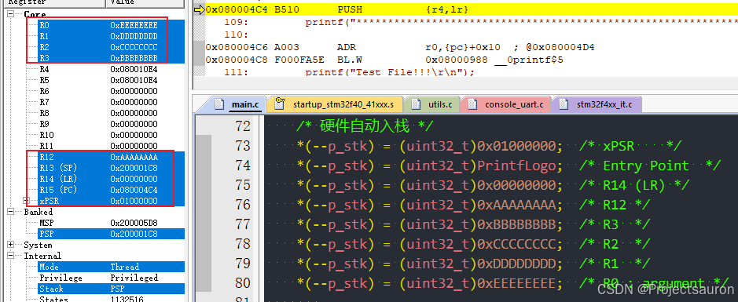
四、SVC 软中断介绍和用法
SVC 用于生成系统函数调用的请求，例如，用户程序不允许直接访问硬件，操作系统可以通过 SVC 提供对硬件的访问。因此，当用户程序想要使用某些硬件时，可以使用 SVC 指令，然后执行操作系统中的软件异常处理程序，并提供用户应用程序请求的服务。通过这种方式，对硬件的访问由操作系统控制，操作系统可以阻止用户应用程序直接访问硬件，从而提供更可靠的系统。
SVC 还可以使软件更具可移植性，因为用户程序不需要知道硬件的编程细节。用户程序只需要知道应用程序编程接口(API)函数 ID 和参数，而实际的硬件级编程是由设备驱动程序处理的。
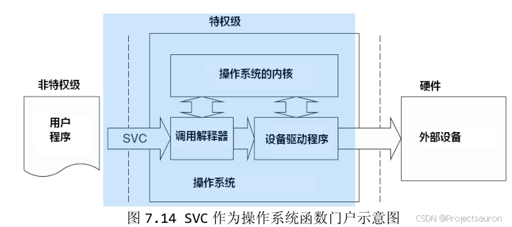
SVC 异常由 SVC 指令产生，该指令需要一个立即数作为参数，根据这个参数执行不同的 SVC 处理函数。例：
1 | |
在 C 语言中，可以使用编译器关键字函数 __svc 或者使用内联汇编代码来执行 SVC 指令。
对于操作系统来说，当 SVC 处理程序被执行时，我们可以通过读取堆栈中的 PC 值来确定 SVC 指令中的立即数据值，然后从该地址读取指令并屏蔽不需要的位。如果使用的PSP堆栈，则还需要通过LR寄存器判断当前使用的是哪个堆栈。
在 ARM7 中有一个软件中断指令 SWI(Software interrupt instruction)。实际上，SVC 指令的二进制编码与 ARM7 中的 SWI 是相同的。由于异常模型发生了变化，这条指令被重命名，以确保程序员能够正确地将软件代码从 ARM7 移植到 Cortex-M3。
当 SVC 指令被执行后，处理器会根据中断向量表中的信息跳转到相应的 SVC 中断处理函数，执行 SVC 指令时，处理器会自动保存当前的上下文，并将处理器的模式切换为特权模式，从而允许执行受限的操作。
简单来说，RTOS 内核中的各个 API，不是在任务里执行的，而是在 SVC 软中断里执行的。这样一来，就把 RTOS 内核和任务隔离开了。
__svc是 MDK 内置的一个定义前缀，用于设置 SVC 软中断的序号（0~255），可以用来区分不同的使用场景
1 | |
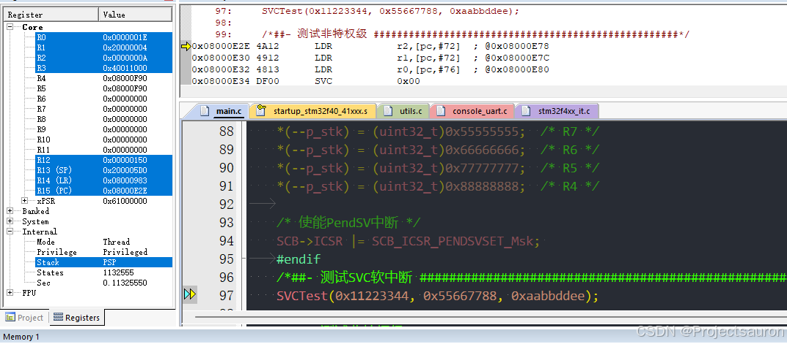
单步运行后直接跳转，并且把函数数据也一并保存在 R0、R1、R2 寄存器中：
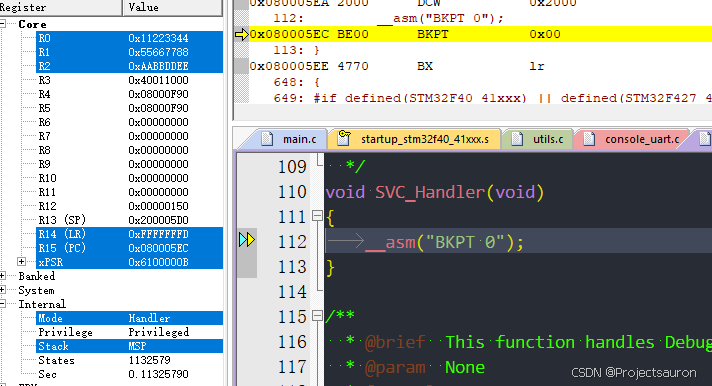
当我们调用 OS 内核的 API 的时候，一调用就会进入到 SVC 中断，让这个函数直接在 SVC 中断中执行，这样把 OS 的函数和我们自己写的应用程序隔离开了。
五、特权级和非特权级使用方法
特权级和非特权级只是针对中断外的任务来说的，中断全部都是特权级
如果代码是在中断里执行，则只能是特权级；中断以外可以是特权级，也可以是非特权级。
非特权级主要是 RTX 在使用。如果是在非特权级的模式下，则不能访问和配置 Cortex-M 内核相关的寄存器（例如 SCB），否则会触发异常。
1 | |
例程中先开启非特权模式，然后再操作 SCB（系统控制块）寄存器时会触发异常：
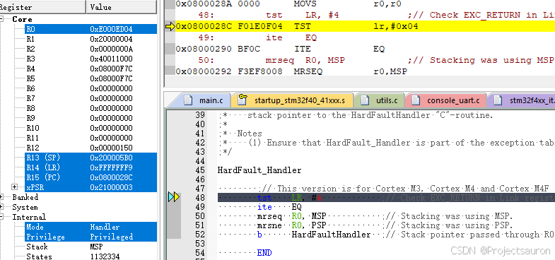
直接就来到 HardFault 了。
那非特权级模式下核心外设寄存器如何初始化？
如果用户将 RTX 操作系统的任务设置在非特权级模式下运行，那么核心外设寄存器应该放在哪里进行初始化呢，主要有以下两种方法：
- 使用 SVC（Supervisor Call）软中断。
- 在初始化和开启RTX多任务前做核心外设的初始化。
那在 Cortex-M3/M4/M7 内核如何切换两种模式？Cortex-M3/M4/M7 中的特殊功能寄存器包括：
- 程序状态寄存器组（PSRs、xPSR）
- 中断屏蔽寄存器组（PRIMASK、FAULTMASK、BASEPRI）
- 控制寄存器（CONTROL）
其中控制寄存器 CONTROL 是用来设置特权级和非特权级切换的，CONTROL 寄存器定义如下：
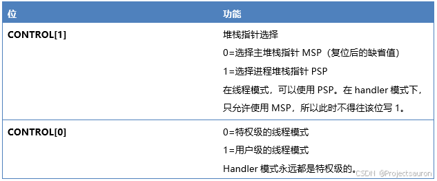
前面的例子中也演示了如何设置 CONTROL 寄存器：
1 | |